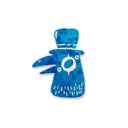

背景故事
“我恭喜你发财，我恭喜你精彩，不好的请走开，最好的请过来，噢礼多人不怪——”
角色能力
【中文能力】可能会有一名善良玩家得知一条虚假的信息，即使你已死亡。
角色简介
乌鸦嘴是小镇不受欢迎的外来者，他总是喜欢播报一些无中生有的消息。
- 乌鸦嘴的能力不会对玩家进行阵营和角色的欺骗
- 乌鸦嘴只会对一名善良玩家进行虚假信息的欺骗，因此对于公开播报的信息，例如哈迪寂亚、维齐尔、报丧女妖等信息不会被欺骗。
- “获得能力”类型的能力不会被欺骗，例如不能欺骗食人族获得了狂热者的能力。
范例
金凤是乌鸦嘴。在游戏的最后一个夜晚，说书人告知晓蕾提普-提普的能力对他生效，他需要疯狂的证明戴哥不是恶魔。但是本局游戏的恶魔是方古，晓蕾因为金凤的能力被说书人欺骗了。
运作方式
在说书人对一名善良玩家进行欺骗之后，在乌鸦嘴角色标记旁放置“失去能力”提示标记。
举例说明乌鸦嘴合法的虚假信息
- 欺骗玩家守夜人的能力对他生效
- 欺骗玩家镜像双子的能力对他生效
- 欺骗玩家洗脑师的能力对他生效
- 欺骗玩家寡妇在场
- 欺骗玩家鹰身女妖能力对他生效
相克规则类型的欺骗
军团在剧本中时，可以欺骗传教士选中了军团。
军团在剧本中时，可以欺骗吟游诗人被处决的玩家是军团。
规则细节
- 如果被欺骗的玩家转变为邪恶阵营，不会再有一名玩家受到乌鸦嘴能力的影响。
提示标记
- 失去能力
- 放置时机：在说书人使用能力欺骗了一个善良玩家之后。
- 放置条件：在说书人使用能力欺骗了一个善良玩家之后，将此标记放置在乌鸦嘴角色标记旁。
- 移除时机：乌鸦嘴离场时。
与特定角色互动
相克规则
Json字段
{
"image": "https://oss.gstonegames.com/data_file/clocktower/upload/202412/c_0372326784371_e24569cc.jpg",
"name": "乌鸦嘴",
"team": "outsider",
"ability": "可能会有一名善良玩家得知一条虚假的信息，即使你已死亡。",
"id": "cassandra",
"edition": "custom",
"firstNightReminder": "",
"otherNightReminder": "",
"setup": false,
"reminders": ["失去能力"],
"remindersGlobal": [],
"firstNight": 0,
"otherNight": 0
},
{kind=link}
角色作者
刘中奇（67）
图标画师
Lei.